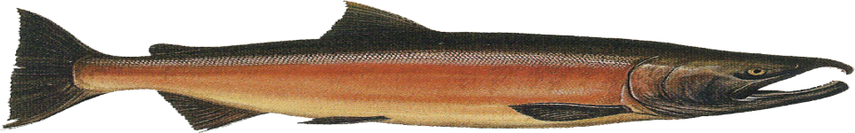

Our Story
Our Premium Gourmet Cookies & Baked Goods Are Mouth-Watering Treats Made The Old-Fashioned Way, Fresh Each And Every Day. And Every Cookie Is Baked, Packed And Shipped By Hand Because We Know You Wouldn’T Have It Any Other Way! Providing Gifts And Gift Baskets In A Number Of Varying Areas Of Interests, Like Dog And Cat Treats And Supplies, Flowers And Floral Arrangements, Healthy Gift Baskets, Kosher Food, Wine, And Beer Subscriptions, And So Much More. These values determine everything we do as we strive to create the best goods and services available to our customers to ensure the very best gifting experience for all. We provide our customers with an exceptionally well merchandised world of the highest gift and gift basket items. Behind the scenes in our distribution center, customers are welcomed by the most knowledgeable sales associates in the business that operates with an absolute dedication to customer service.

Contact Information :
If you would like to speak to us, please call +44 (0) 117 939 2000, dine@the-salmon.co.uk .

Opening Times:
11:00 AM to 11:00 PM - 7 Days a Week
12:00 Afternoon to 9:00 PM for food - 7 Days a Week

Locations With Addresses :
- Seattle 7415 Greenwood Ave N, Seattle, WA 98103, United States
- Tokyo 1 Chome-21-15 Jingumae, Shibuya City, Tokyo 150-0001, Japan
- Dubai Financial Center Rd - Dubai - United Arab Emirates
- Paris 5 Rue Crespin du Gast, 75011 Paris, France
- Lima Jirón de la Unión 272, Cercado de Lima 15001, Peru